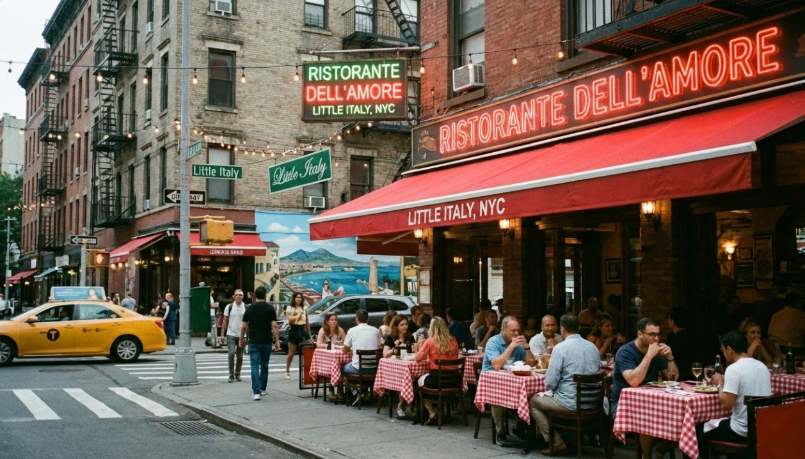

The Best Italian food you'll taste.
Ristorante dell'Amore was created to bring the warmth, comfort, and tradition of Italian cuisine to the heart of New York City, Little Italy. Inspired by generations of family recipes & Italian culture, our mission is to serve food that feels both authentic and memorable.
From handmade pasta to fresh antipasti and classic pizzas, every dish is prepared with care and high-quality ingredients. We believe that meals should bring people together, which is why our restaurant focuses on creating an experience filled with flavor, hospitality, and love.
